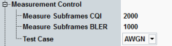

The "Measurement Control" parameters configure the scope of the measurement.
For background information, refer to "HSDPA CQI Measurement".
See also: "Statistical Settings"

Defines the number of HSDPA subframes (transmission packets) to be measured per measurement cycle (statistics cycle).
"Measure Subframes CQI" denotes the number of CQI values collected in the first stage of the HSDPA CQI test and used for the calculation of CQI statistics.
"Measure Subframes BLER" denotes the number of subframes with ACK and NACK responses measured in the second stage and used for the calculation of BLER.
Specify a multiple of 100 subframes.
See also: "Statistical Results"
Selects either AWGN or fading to display the respective view of the HSDPA CQI tab. For details, refer to "HSDPA CQI Measurement".
Remote command: